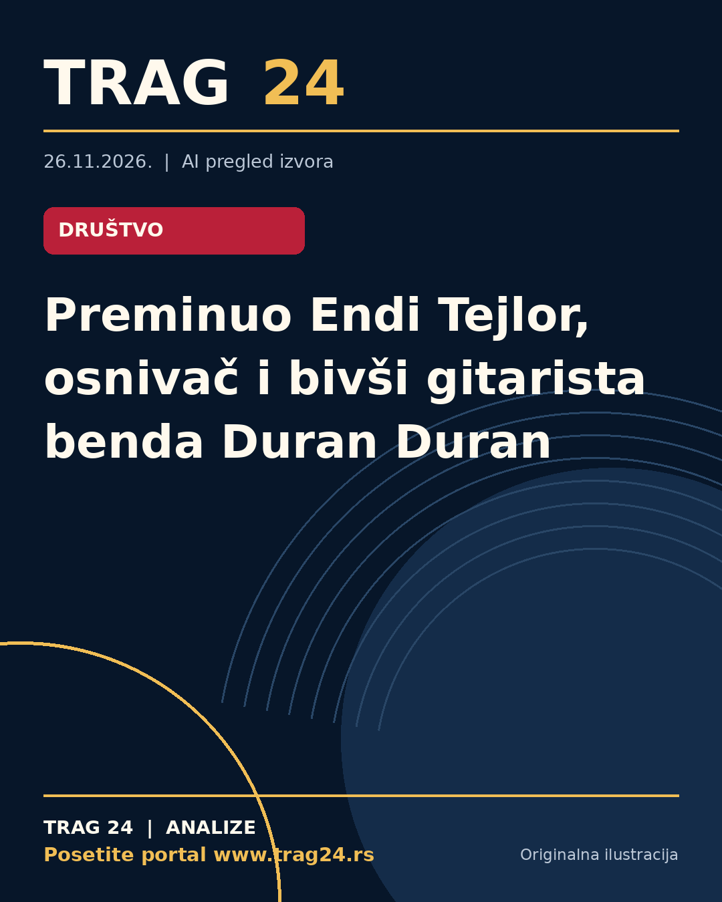

Preminuo Endi Tejlor, osnivač i bivši gitarista benda Duran Duran

ŠTA SE DOGODILO
Endi Tejlor, osnivač i bivši gitarista čuvene rok grupe Duran Duran, preminuo je nakon duge i hrabre borbe sa rakom prostate. Preminuo je u svom domu, okružen porodicom, u ponedeljak, 23. novembra, u 65. godini života.
HRONOLOGIJA
Endi Tejlor se proslavio kao član benda Duran Duran, sa kojima je ostvario veliki uspeh tokom osamdesetih godina prošlog veka. Bio je koautor nekih od najvećih hitova grupe, poput „Rio“ i „Girls on Film“. Nakon duge borbe sa rakom prostate u četvrtom stadijumu, preminuo je u novembru 2023. godine. Bend i porodica su istakli njegovu hrabrost i posvećenost porodici tokom bolesti.
ŠTA NAVODE IZVORI
Prema izjavama supruge Trejsi Vilson, koja je bila uz njega više od 40 godina, porodica mu je uvek bila na prvom mestu uprkos svetskom uspehu. Obraćajući se medijima, supruga je opisala Endija kao najdivnijeg supruga, brižnog oca i ponosnog dedu. Članovi benda, uključujući Sajmona Lebona i ostale članove, naglasili su njegov neizbrisiv doprinos muzici i kako je njegova ličnost držala bend prizemljenim tokom godina. Izrazili su duboku tugu i molili za poštovanje privatnosti porodice u ovom teškom trenutku.
ŠTA JE POTVRĐENO
Potvrđeno je da je Endi Tejlor preminuo 23. novembra 2023. godine u 65. godini života, nakon duge bolesti raka prostate. Preminuo je u svom domu u prisustvu porodice. Bend Duran Duran i porodica zvanično su potvrdili vest o njegovoj smrti u saopštenjima i izjavama koje su objavljene na njihovim zvaničnim kanalima.
ŠTA NIJE POTVRĐENO
Nema informacija koje osporavaju tačnost osnovnih činjenica o datumu smrti, uzroku i okolnostima. Razlika u navodnoj starosti (65 ili 66 godina) može biti rezultat različitog računanja, ali prevladava podatak da je imao 65 godina. Ne postoje detaljnije medicinske informacije ili spekulacije o toku bolesti osim opštih navoda o rak prostate u četvrtom stadijumu.
ŠTA OSTАJE OTVORENO: Ostaje nama poznata samo osnovna biografska i profesionalna slika Endija Tejlora. Ostaju pitanja vezana za detalje njegove karijere i privatnog života koje nisu pokrivene u dostupnim izvorima, ali nisu ni nužne za izveštavanje o ovoj vesti. Poštovanje privatnosti porodice je naglašeno u svim izjavama.
Izvori
- https://www.blic.rs/kultura/preminuo-endi-tejlor/fwbl9sj
- https://www.danas.rs/kultura/scena/umro-endi-tejlor-gitarista-duran-duran/
- https://n1info.rs/magazin/showbiz/preminuo-endi-tejlor-bivsi-gitarista-grupe-duran-duran/
Ova analiza je pripremljena uz pomoć veštačke inteligencije na osnovu javno dostupnih izvora. Navodi izvora nisu nužno nezavisno potvrđeni.